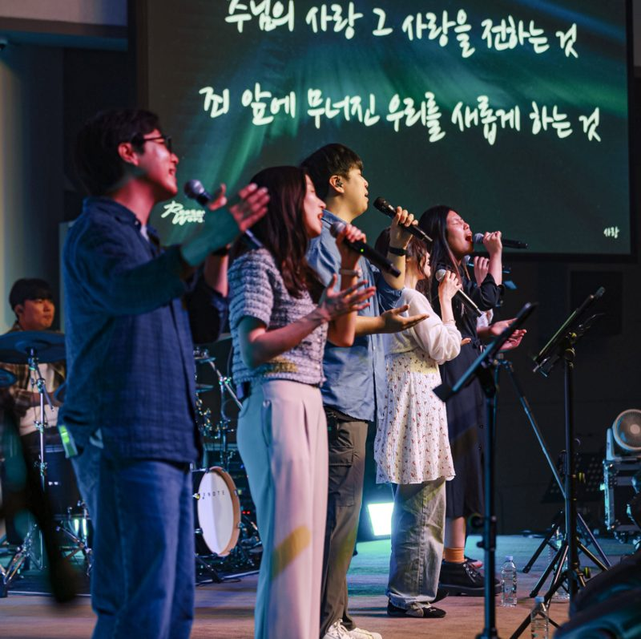
Reason Worship
리즌워십
- 오픈예배
- 격월 화요일 정기예배
유닛은 대전과 중부권 곳곳에서 예배와 음악으로 사역하고 있는 팀과 사역자들을 소개하는 공간입니다. 교단과 지역, 장르는 저마다 다르지만 각자의 자리에서 하나님 나라의 문화를 만들어 가고 있습니다.
중부권에 이런 사역팀들이 있다는 것을 알리고, 서로를 알아가는 작은 연결의 창이 되기를 바랍니다.
"몸은 하나인데 많은 지체가 있고 몸의 지체가 많으나 한 몸임과 같이 그리스도도 그러하니라"
고린도전서 12:12정기예배와 찾아가는 예배로 대전과 중부권의 예배를 섬기고 있는 사역팀들입니다.

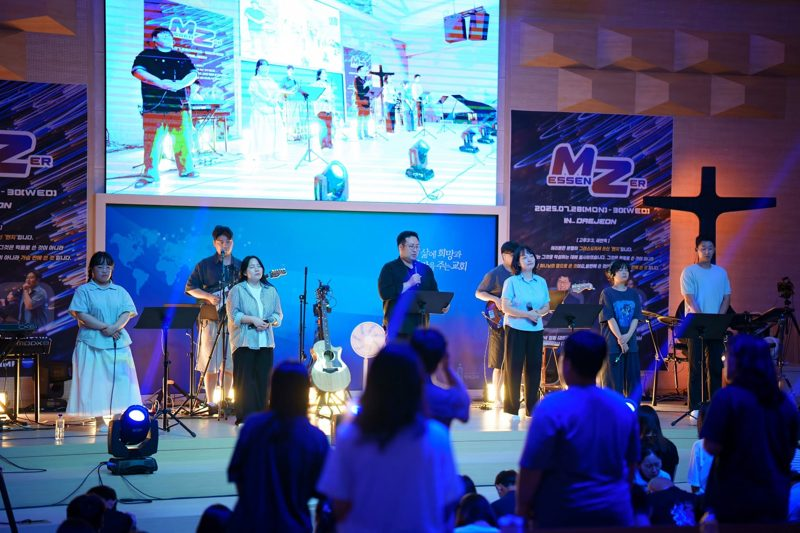
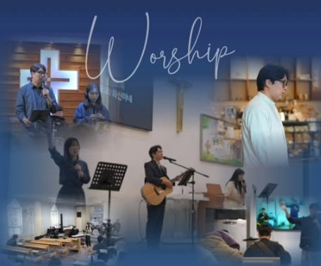
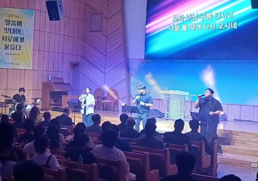
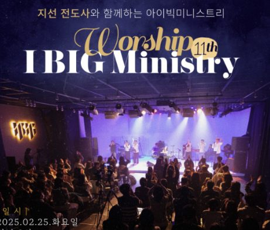
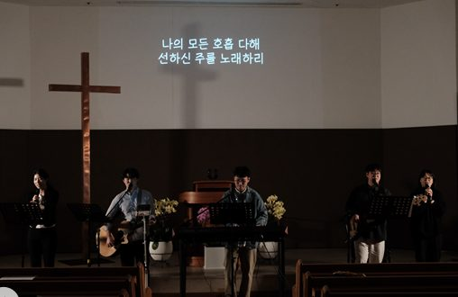
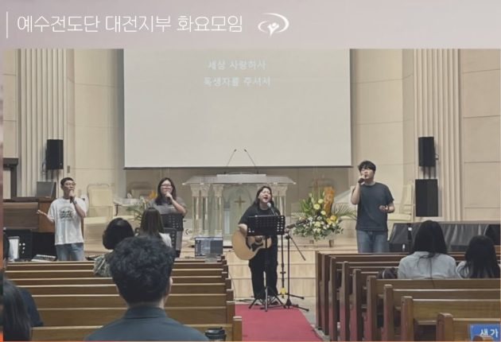
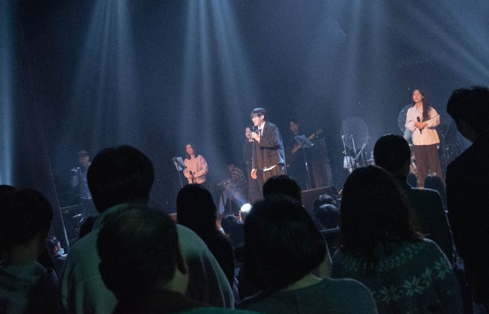
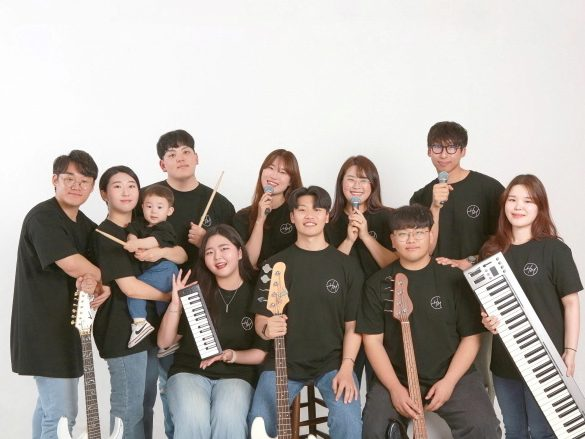
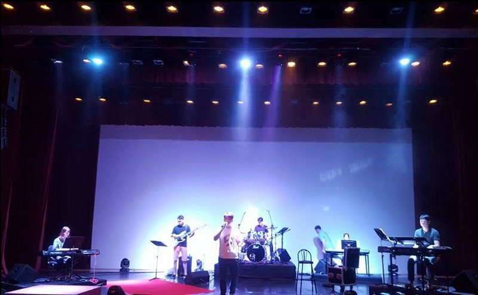
재즈와 클래식, 인디와 CCM — 다양한 장르로 활동하는 중부권의 연주자와 밴드들입니다.
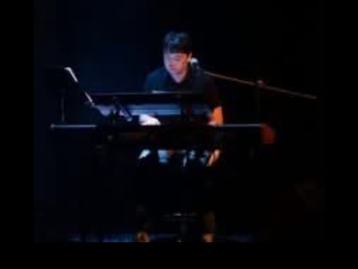
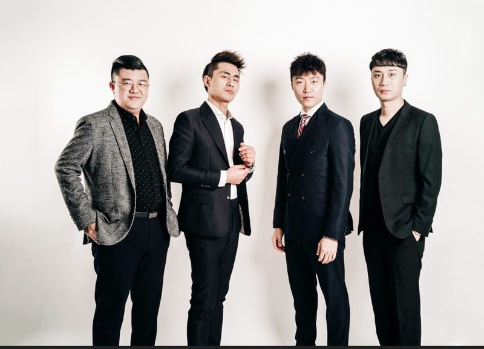
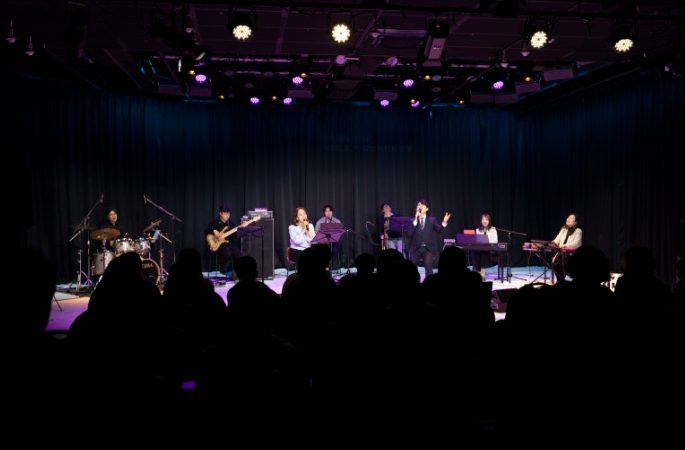
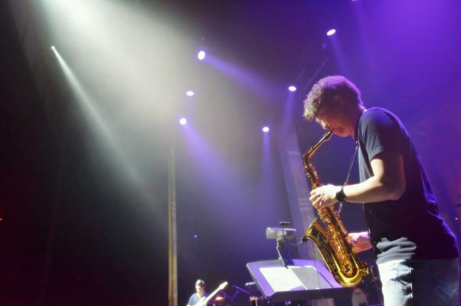
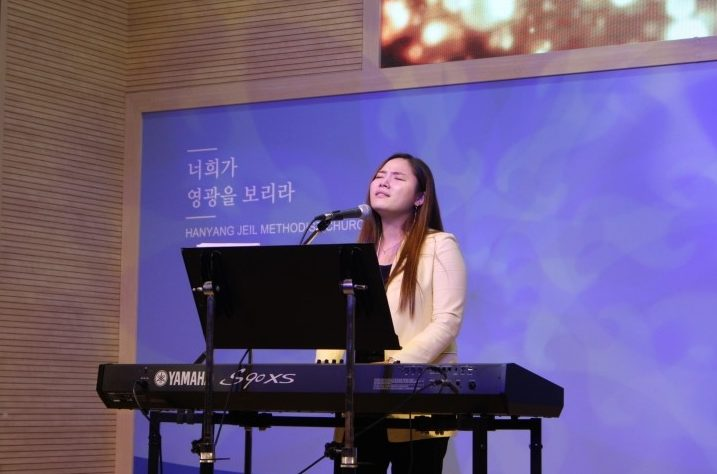
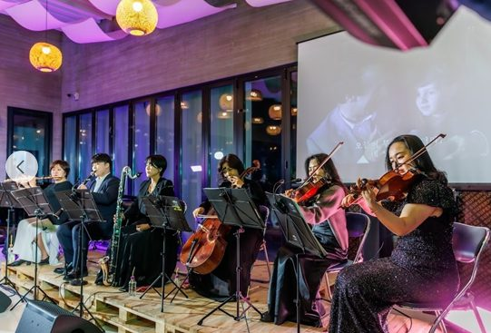
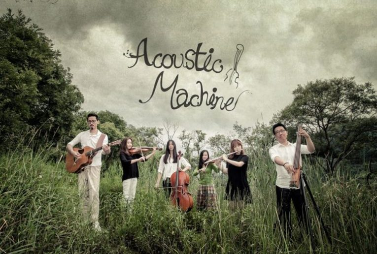
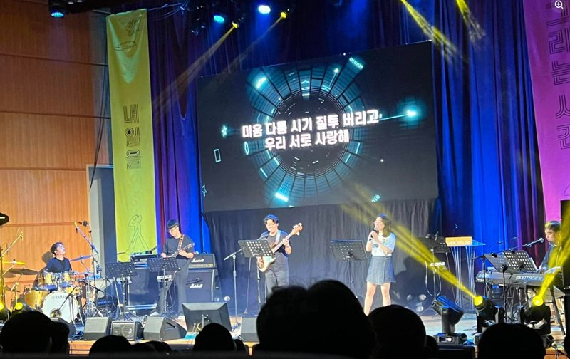
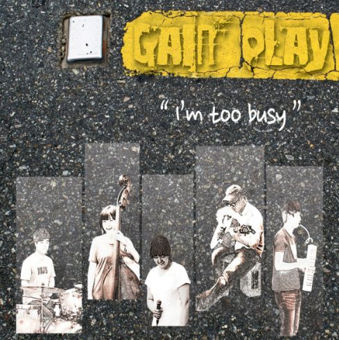